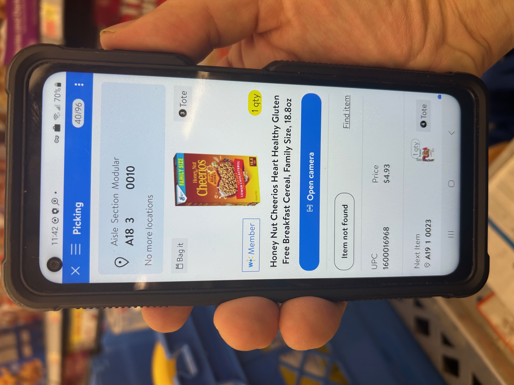
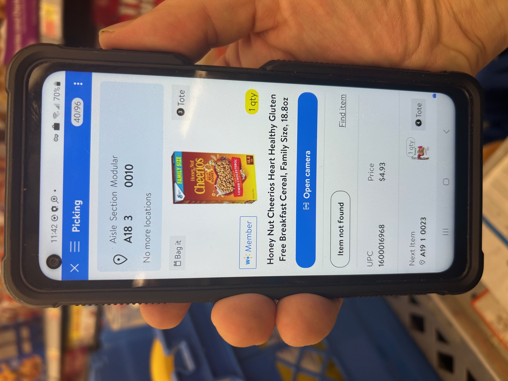

(STEP #1) The first step would be for the customer to go online using the stores website and pick out anything she or he wants to buy in the store. (STEP #2) The next step would be for me to shop for those requested items and collect them in blue containers or totes which are on a pushing cart. I would transport those items to the proper place for storage within the Pick up department of the store. (STEP #3) The last step would be to get those items to the customer, either by delivery to their home or a pick up (by the customer where they come into the store) at a set time.
 

And on a typical Pick Walk at Walmart #2503, you see the Cereal being shopped for by me as it's in Aisle A-18, Section 3 and in Modular or Space 10. (top and below here)


Working in a tight deadline corporate setting prepared me for a successful time as an personal online shopper, no doubt about it. Because I remembered those items designing a store circular, I now see them on the shelves of Walmart and I am successfully able to find them to collect for my job. Now, because I collected them during a Walmart shift, it will be very easy to transition back to a corporate setting doing advertising retail because I saw them first hand in a store location. The correct item will always be advertised because of my "boots on the ground" approach. Using a push cart (above) with eight blue totes is/was my workplace office, so to speak.
With my successful experiences from the store level, I will be able to return easily to the corporate world today breaming with more confidence and knowledge doing advertising type work.
THE FUTURE IS NOW! LET'S CHAT! EMAIL ME